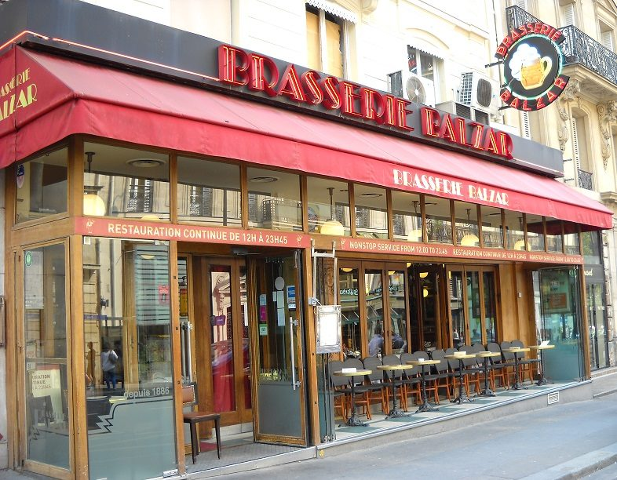
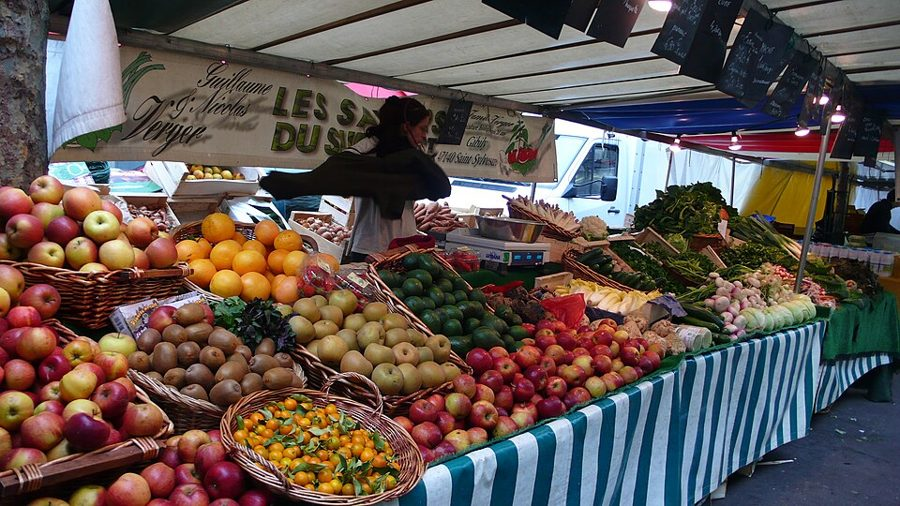
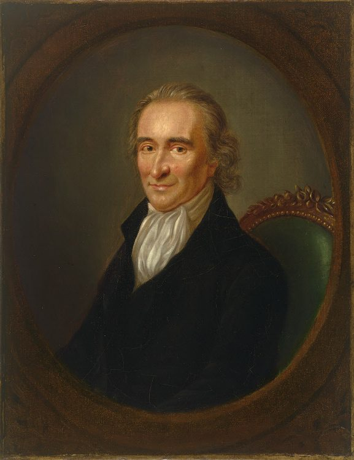
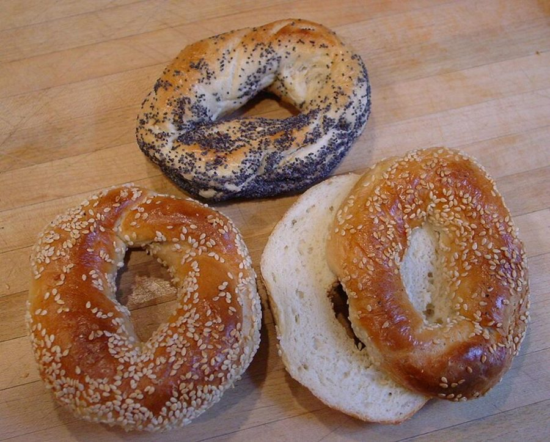
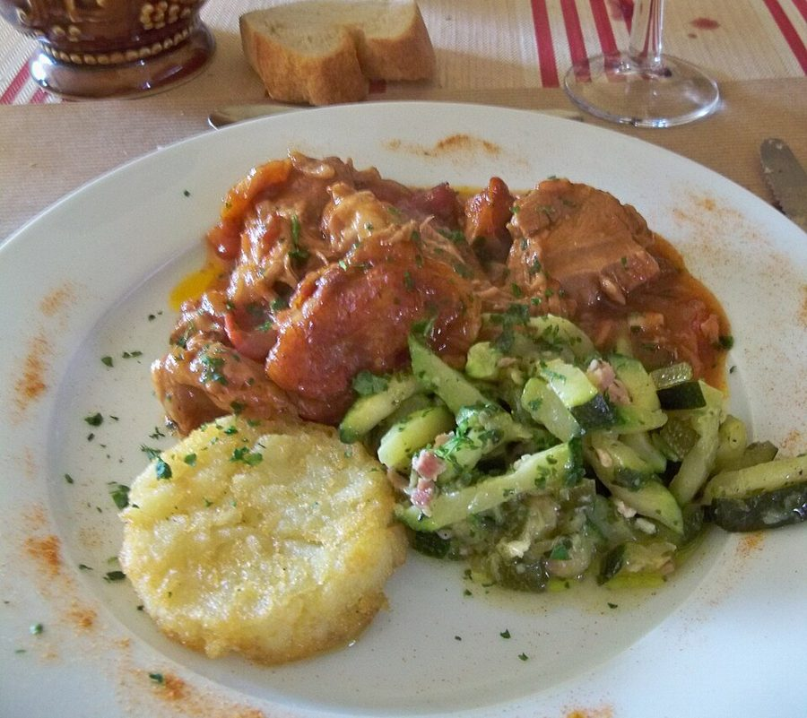

这一篇在做什么
1998 年夏天到 1999 年春天。第 17 篇里，作者和一群常客为了保住被连锁集团买下的老啤酒馆 Balzar，组织起来占领了它；这一篇是下半场：再占领、侍者罢工、开会、和老板吃早餐，直到侍者们拿钱走人。一条线是这场仗怎样一步步打输；另一条线是作者不断岔出去的议论：法国人的八月、评论家、做生意的胃口、反美和反英、法国人爱讲的大道理。读的时候留意作者怎样看待「输」，以及他最后从侍者身上看到了什么。

Balzar 的门面，2013 年。它在第五区的学院路（rue des Écoles）上，离索邦大学一个街角。注意遮阳篷下方横条上那行英文：§8 店里硬塞给作者一份英文菜单。Calyste23，CC BY-SA 3.0，维基共享资源 读之前：这篇的来历
这一篇是事情过去之后回头写的：开头就说好些人问他后来怎样了，头两段先把结局交了底。它是第 17 篇《Balzar 之战》的续篇。第 17 篇写在第一次占领和第一次早餐之后不久，用现在时，停在「店会照旧，直到它变了」；这一篇主要写 1998 年 8 月到 1999 年 5 月底，用过去时。中间隔着第 18 篇和第 19 篇圣诞日记，一家人在这期间被房东收回公寓、搬进了圣日耳曼大道边上的新家（第 19 篇）。到这一篇末尾 Martha 已怀孕五个月，下一篇写第二个孩子在巴黎出生。它在书里属第四部分「描绘世界的机器」。作者在这群法国常客里是唯一的美国人，这一点他自己反复拿来开玩笑。
一场注定要输的保卫战，作者为什么还要打？输了以后，他觉得自己守住了什么、又失去了什么？
读的时候带着这几个问题。不用先找答案，读完回来对照「检查一下理解」。
常客们说菜好不好「不是重点」，侍者却最在意菜。谁说得对？作者从这里看出了什么？§3
作者在这场运动里是什么位置：带头的、跟着的，还是站在一边看的？他对自己的态度认真吗？§3 §4 §5
作者说法国的反美情绪「不太真」，反英情绪才是真的。他拿什么作证据？你信吗？§6
最后一场晚宴上，作者对「法国人凡事讲大道理」的看法变了没有？§7 §8
这一篇的路线
这一篇不是「小事、大事」两条线来回，而是一条按月份往下走的战事，中间不断岔出去。主线很清楚：开会、占领、罢工、再开会、早餐、散场、告别晚宴。读译本时觉得「突然跳了」的地方，几乎都是岔路：刚说完要打仗，作者讲起法国人的八月；刚说评论家写了文章，他讲起评论家为什么不快乐；刚说老板提了个英国人的名字，他讲了一大段反美和反英。岔路不是闲笔，每一条都在给最后那段话铺垫。下面这张图把主线和岔路摊开。
战事（按时间往下）
岔出去的议论
§1 六月的占领（回顾）
八月，全城关门
§2 九月：坏消息
评论家为什么不快乐
§3 公寓里开会：买下它？
做生意的胃口
端菜的人和体面
§4 十月：再占领
§5 侍者罢工
十一月：教室里的大会
从 68 到 81
§6 和老板第二次早餐
反美是虚的，反英是真的
§7 和评论家喝三瓶
文明和文化
§8 十二月：侍者走人
次年五月：告别晚宴
讲大道理是一种天赋
§9 现在：想念
本站示意图。左边蓝点是这场仗，从上往下按时间走；右边橙点是作者岔出去的议论；折线是阅读顺序。 作者落在哪： 仗打输了，侍者拿一笔钱走人，作者自嘲只赢了自尊。可他在告别晚宴上承认，巴黎最让他恼火的那种凡事化成抽象道理的习惯，其实是一种天赋：小店之所以特别，正因为站在大建筑、大观念的影子里。义愤耗尽之后，他才发觉自己永远失去了那家店。
分节地图
原书这一篇有八处分隔，分成九节。全篇九千词，本站分成三次坐下。每一节的粗体是读译本时认得出的场面；下面的斜体是英文这一节开头的几个词，打开电子书搜它就能跳到那里。读完一节打个勾。这一篇默认你读过第 17 篇。
第一次坐下§1–§3 · 约 3500 词 · 交代前情，度假回来，开会商量下一步
结局先交底，八月全城关门，从机场回家约 1200 词 Quite a few people have asked me … 先说结局和前情，再岔去讲法国人的八月。留意头两段的口气。 Lorenzo 来电，《世界报》的刻薄评论家约 500 词 As soon as I was back … 一个坏消息之后，作者岔开去讲评论家为什么不快乐。整节几乎是题外话。 塞纳河边的公寓里开会，买下 Balzar 的主意约 1700 词 At the meeting there was a … 罢工、退出、买下三条路。留意作者自己的位置，和侍者 Guy 的回答。 第二次坐下§4–§6 · 约 2600 词 · 再占领、侍者罢工、教室里的大会、和老板第二次早餐
十月再占领，Lorenzo 的演说，「这会是越南！」约 600 词 October came, and we occupied the … 全篇声势最高的一刻，结尾一句话让它泄了气。 侍者举牌上街，电影学校教室里的会员大会约 900 词 The next day at lunch the … 从演戏到政治：看一场表决怎样一步步滑向没有意义。 La Coupole 的早餐，老板抛出康兰的名字约 1100 词 On November 30, that Tuesday, we … 「拿个厚信封走人」；中间一大段讲反美和反英，是作者的论断。 第三次坐下§7–§9 · 约 2900 词 · 和评论家的午餐，侍者走人，告别晚宴
楼下的巴斯克小馆，和 Quélin 喝掉三瓶约 1200 词 It was around that time that … 作者当了一回说客。留意他怎样看法国文人嘴里的悖论。 侍者拿钱走人，第九区的告别晚宴约 1600 词 And then it was over, all … 「一把樱桃」和老侍者 Robert 的话。作者的结论在讲文明和文化的那一段。 店还在，人却回不去了约 100 词 I was so overtaken by the … 一段尾声：春夜的光、椭圆盘子和一份烤鸡。
背景：作者默认你知道的事
按在书里出现的顺序排，标题前是节号。
§1 Balzar、Flo 集团和「Balzar 之友」Balzar 是一家开了一百多年的啤酒馆（brasserie）：这类店源自阿尔萨斯，卖啤酒、开到很晚，后来和饭馆已没什么分别。第 17 篇写 1998 年春天它被 Flo 集团买下，常客们组成「Balzar 之友」（Les Amis du Balzar），6 月 25 日约六十位会员分头订座、在店里当场抗议，又和老板在店里吃了一顿早餐。这一篇接着写下半场。第 17 篇里化名 Thierry 的那位侍者，就是这里的侍者代表 Claude Blanchot：§1 说他终于可以摘下作者给他贴的「假胡子」了。
Bucher Jean-Paul Bucher 阿尔萨斯人，十四岁进饭店当学徒、从底层做起的餐饮大亨（书里说他是侍者出身），Flo 集团的创办人，旗下有一串老牌啤酒馆和连锁店。第 17 篇里他对常客的要求一口答应；这一篇他客气依旧，底线不动。
Lorenzo Valentin Lorenzo Valentin Balzar 对面一家出版社的年轻出版人，「Balzar 之友」的头儿，每次演说都是他。
§1 法国人的八月和「回归」法国法律规定每年五周带薪假（1982 年起；1936 年人民阵线政府定下的是两周），八月是度假高峰，巴黎很多小店整月关门。九月初叫 la rentrée（书里拼作 ré-entrée），开学、复工、出版季和政坛都重新开张。作者拿美国作比：劳动节（九月第一个星期一）一到，夏天就猛地结束了。他还说巴黎比纽约靠北，这是实话：巴黎在北纬 49 度上下，纽约在 41 度上下，所以巴黎的秋天来得早。§1 作者从奥利机场坐车回家，一路经过奥尔良门、当费尔-罗什洛广场（他说少年时在这一带住过，第 1 篇写过 1973 年全家来巴黎那一年）、拉斯拜尔大道上正在支摊的有机市集。

拉斯拜尔大道的市集，2008 年 3 月的一个星期天上午。§1 作者回家路上看到的「有机市集」就在这条大道上。yisris from Morioka, Japan，CC BY 2.0，维基共享资源 §2 潘恩：「Balzar 起义里的潘恩」潘恩（Thomas Paine，1737–1809）的小册子《常识》（1776）鼓动北美独立。他后来到法国，当选国民公会议员，1793 年 12 月在恐怖统治中被捕，1794 年 11 月才出狱；晚年回到美国，1809 年在纽约去世，境况潦倒。作者是会场里唯一的美国人，就自比潘恩，随即想起这是个「坏兆头」。「醉死在纽约」是他记得的一出六十年代街头剧里的说法，这里是自嘲的玩笑，不必当史实。

潘恩的肖像，Laurent Dabos 画，约 1792 年，那时潘恩正在法国。藏华盛顿的美国国家肖像馆。Laurent Dabos，公有领域，维基共享资源 §2 作者的「魔鬼理论」和他点到的评论家§2 几乎整节是题外话：作者说，写吃写画写得好的人，往往本来就不太享受这件东西，所以才有心思观察谁坐在哪、谁喜欢什么；真正享受的人吃完就满足了，不想多谈。这是作者的一家之言，半开玩笑。他点了一串名字，美国读者多半认得：
Quélin Jean-Pierre Quélin 《世界报》（Le Monde）的美食评论家。第 17 篇他撰文说 Balzar 的菜一向难吃、易手后更糟；第 17 篇把他比作书评人 Jonathan Yardley，这里换成了 Hilton Kramer。§7 作者请他吃午饭。
Hilton Kramer Hilton Kramer 美国艺术评论家（1928–2012），做过《纽约时报》首席艺术评论，1982 年创办保守派刊物《新标准》（The New Criterion），以尖刻出名。
M. F. K. Fisher M. F. K. Fisher 美国饮食作家（1908–1992），公认写吃写得最好的人之一。同一句里的 Seymour Britchky 是纽约的餐馆指南作者。
罗斯金 John Ruskin 英国十九世纪的艺术评论家，写哥特式建筑和尖拱极有名。他的婚姻 1854 年以从未圆房为由被宣告无效；书里说他被妻子的身体吓坏，是后来的传记作者提出、流传很广的推测，没有定论。
汤姆·沃尔夫 Tom Wolfe 美国记者、作家，1975 年的《画出来的字》（The Painted Word）讥讽现代艺术靠理论撑腰。作者说他「既完全对又完全错」。
§3 Bemelmans 的侍者、右岸的大酒馆、蒙特利尔贝果Ludwig Bemelmans（1898–1962）生在奥匈帝国，后来成了美国作家、画家，最出名的是童书《玛德琳》（Madeline）。他年轻时在纽约的大饭店里打过工，后来写过不少饭店后厨的故事。§3 作者说他笔下的侍者进出厨房时嘟囔 sale métier（脏行当）。Bucher 在右岸的那两家「气氛工厂」：Le Boeuf sur le Toit 是装饰艺术风格，Julien 是美好年代风格，都是 Flo 旗下的大酒馆。作者的开店白日梦里有一家专卖蒙特利尔贝果：先在水里煮、再烤，个小、密实、带甜味。他少年时住在蒙特利尔（第 1 篇）。

蒙特利尔式贝果，芝麻和罂粟籽两种，2006 年。和本书无关，只是让你看看作者念念不忘的那种贝果长什么样。Garyperlman at English Wikipedia，公有领域，维基共享资源 §5 「从 68 到 81」和「落选者的 Balzar」1968 年五月，巴黎学生和工人掀起风潮，标语满墙，不少学生自命毛派。1981 年 5 月，社会党的密特朗（François Mitterrand）当选总统，左派真的掌了权，没过两年就转向紧缩。作者的朋友说「今晚我们从 68 走到了 81」，意思是一晚上从口号和梦想走到了掌权后的妥协。§5 那个「落选者的 Balzar」借的是 1863 年的「落选者沙龙」（Salon des Refusés）：官方沙龙落选的画太多，拿破仑三世准许另办一场展览，马奈的《草地上的午餐》就在那里展出。书里 réfusés 多了一个重音，法文写 refusés。
§6 La Coupole 和康兰La Coupole 在蒙帕纳斯大道，1927 年开业，是一间极大的装饰艺术风格大厅，1988 年归了 Flo 集团。第 17 篇里常客们齐喊「老顾客！」，意思是以前常去、现在不去了；这一篇老板偏偏约在这里吃早餐。康兰（Terence Conran，1931–2020）是英国设计师和商人，1964 年创办家居店 Habitat，九十年代在伦敦开了一串大餐厅。他在第六区马扎然街（rue Mazarine，书里写作 rue Mazarin）开的 L'Alcazar，就是书里说的「几个星期前」刚开张的那家。
蒙帕纳斯大道上的 La Coupole，2011 年。§6 常客们和老板在这里吃第二次早餐，早上八点半。LPLT，CC BY-SA 3.0，维基共享资源 §6 反美是虚的，反英是真的？这是作者的论断：法国的反美多是抽象的意识形态和媒体事件，反英才是说不出口的真情绪。他拿十九世纪英国的反天主教作比：英国人嘴上骂教皇，照样爱威尼斯、崇拜拉斐尔、满屋意大利画。「农民砸麦当劳」，最出名的一次是 1999 年 8 月：农民运动领袖 José Bové 带人拆了南部小城米约（Millau）一家在建的麦当劳，抗议美国对洛克福奶酪等法国产品加征关税，成了全国新闻。戴安娜 1997 年 8 月在巴黎车祸身亡，作者说法国报纸调查此事时径直叫她「Diana Spencer」，不称王妃，在他看来就是不屑。
§7 楼下的小馆和那顿午饭Aux Fins Gourmets 在圣日耳曼大道 213 号（第七区），书里说是巴斯克小馆，就在作者家楼下。Quélin 点的 haricot de mouton 传统上是羊肉炖芜菁和土豆，名字里的 haricot 一般认为不是「豆子」；navarin 也是炖羊肉。Madiran 是法国西南部的红酒，主要用 Tannat 葡萄，口感厚重，中午喝三瓶足以让人睡过下午。两人都同意 Passard（第 12 篇讲过他的 L'Arpège）和 Gagnaire 这样的顶尖厨师独一无二，Quélin 说他们的独创已经无从评判。Quélin 讲到自己在阿尔及利亚战争（1954–1962）里服役的往事。作者的「理论」里说每个法国人都是「自己塔楼里的蒙田」：蒙田在自家城堡塔楼的书房里写成《随笔集》。

一盘炖羊肉（navarin d'agneau），2013 年。只是示意，不是那家店的菜。§7 Quélin 走时特意夸老板的 navarin 做得好。Marianne Casamance，CC BY-SA 3.0，维基共享资源 §8 晚宴上的话题和几个名字告别晚宴在 1999 年 5 月底。老侍者 Robert 说起「科西嘉、克林顿那件事」，书里没说是哪件。那时法国的大新闻之一是科西嘉的「草棚案」：4 月，宪兵烧掉海滩上的违建餐馆，5 月初查出是省长 Bernard Bonnet 授意，他被立案、收押。美国那边，克林顿因莱温斯基案被众议院弹劾，1999 年 2 月参议院表决无罪。La guerre est finie（战争结束了）也是 Alain Resnais 1966 年一部电影的片名。作者最后点名的 René Clair（电影导演）、Trenet（香颂歌手）、Lartigue（摄影师），都是拍过、唱过巴黎日常生活的人。
词与短语
只收中文译文多半传不出原味的地方：熟词生义、反话和挖苦、典故、夹在英文里的法文。读译本读到觉得别扭、不知道作者在说什么时，来这里找那一节的；斜体小字是原句里的几个英文词，在电子书里搜它就能找到原文。
§1 结局先交底，八月全城关门，从机场回家
fin de siècle
… during a fin de siècle dominated by …
（法文）世纪末
字面是「世纪之末」，在英文里常带着十九世纪末那种颓靡、终结的气息。1998 年正好又是一个世纪末，作者拿这个词给这场小小的失败配上时代背景。
amour-propre
… if only our own amour-propre, and …
（法文）自尊、面子
英文里常用的法文借词，比 self-respect 多一点虚荣的味道。作者承认，保住的「也许只有」这点面子。
in ornamental French
… in which, in ornamental French, we won.
用花哨的法式说法，我们赢了
和前面的 In plain English（说白了）对着写：说白了是输了，换成法国人爱用的那种绕弯的漂亮话，就能算赢。拿法语的修辞开玩笑，也在自嘲。
false mustache
… behind the pathetic false mustache he was provided …
（作者给他起的）化名
不是真贴了胡子。第 17 篇为了保护他，给他起了假名 Thierry；现在事情结束了，作者说他可以「摘下那撇可怜的假胡子」，用真名出场。
sincerely made and utterly worthless
… both very sincerely made and utterly worthless …
句句真心，一文不值
老板的保证。两个评价看似矛盾，作者的意思是：他说的时候是真心的，但他没有任何义务兑现，所以等于没说。
internal emigration
The pattern of internal emigration, as described …
（从外省到首都的）国内迁移
不是「移民出国」。指年轻人从外省来巴黎闯荡，就像巴尔扎克小说里的拉斯蒂涅。侍者也一样：本想挣够了回老家开店，结果只在八月回去。
garçons
All the garçons, as I had learned …
（法文）侍者们
字面是「男孩」。现在叫服务员 garçon 被认为不礼貌，可 Balzar 的侍者自己这么叫，第 17 篇说这个老式叫法给这行当添了蓝领的尊严。所以作者说他是「不大情愿地」学会这么叫的。
the warm spit of American opinion
… and the warm spit of American opinion …
美国舆论那口温热的唾沫
前半句是「被美国海水冷冷地冲一冲」，后半句接着用水的比喻，却换成了唾沫：回美国度假，也要被美国人的意见喷一脸。
Canadianly
… Canada (who said, Canadianly, “Oh, you …
很加拿大地（客气而不动声色）
作者拿国名造副词。加拿大人以客气、不夸张出名，「住巴黎啊，真有意思」说得礼貌又平淡，作者就用这个词概括那种口气。
like a ton of bricks
… hits Americans like a ton of bricks …
当头一棒
习语，「像一吨砖头砸下来」，形容打击突然又沉重。劳动节一过就得回去上班，美国人才发现夏天没了。
no-collar classes
… for the no-collar classes almost no vacation …
不打领带、不坐班的那类人
仿 white-collar、blue-collar 造的词：不穿制服也不打领带的自由职业者、写字的人。有了传真和电脑，他们的两周假等于没有假。
eager beaver
… even for an eager beaver, overachieving tycoon …
工作狂
习语，字面是「勤快的海狸」，指干劲过头的人。作者说在法国，哪怕是工作狂大亨八月也只能度假：公司里没人可管。
inconsolably grumpy
… one of the inconsolably grumpy women who …
怎么哄都哄不好的臭脸
inconsolably 本来用在悲痛上（悲不自胜），用来形容面包店店员的坏脾气，是故意的大词小用。她们九月一号居然互相亲脸，可见假期把人过腻了。
§2 Lorenzo 来电，《世界报》的刻薄评论家
médiatiser
… was to médiatiser some more and then …
（法文）制造媒体声势
法文动词，让一件事上媒体。作者用斜体保留原文，带一点嘲弄：这群人除了「再上一次报」和「再开一次会」，想不出别的办法。全篇反复出现，名词是 médiatisation。
tribunal des Prudhommes
… grievance hearing at the tribunal des Prudhommes …
（法文）劳资纠纷法庭
由劳资双方选出的法官组成，专审雇佣纠纷。法文通常写 prud’hommes（明理之人），作者随即注了 labor court。
the Tom Paine of the Balzar insurrection
… the Tom Paine of the Balzar insurrection …
Balzar 起义里的潘恩
潘恩是参加过美法两场革命的美国人（见「背景」）。作者自比潘恩，自我感觉良好；insurrection（起义）也是大词小用。
dyspeptic
… the oddly dyspeptic food writer …
脾气乖戾的
本义是消化不良，引申为脾气坏、看什么都不顺眼。用在美食评论家身上是双关：写吃的人，偏偏「消化不良」。
Devil’s Theory
This is the Devil’s Theory of …
魔鬼理论
首字母大写，像个正式名称，意思是往坏处推想：评论家不是因为喜欢才写，而是因为不喜欢。说完他又补一句「我敢肯定是对的」，口气半真半假。
speech act
… are, for them, the appropriate speech act …
（该说的）话
语言哲学的术语「言语行为」，指说话本身就是在做一件事。作者故意用学术词说一件很俗的事：吃满足了的人，只会懒懒地说几句客套话。§6 又用了一次，说法国的反美只是「一种言语行为」。
food fusses
All critics are food fusses, not wanting …
挑食的孩子
fuss 在这里是「挑剔的人」。作者把评论家比作不肯吃青菜、还宣布青菜有毒的小孩，接着用 Mother-MOMA（妈妈＋现代艺术博物馆）把艺术评论也扯进来。
§3 塞纳河边的公寓里开会，买下 Balzar 的主意
smoothie
… but a smoothie from the CIA.
油嘴滑舌的家伙
不是果昔。smoothie 指圆滑、会说话、让人信不过的人。左派记者看作者的眼神，像在看一个中情局派来的说客。
Little Prince style
… a scarf thrown, Little Prince style, around …
像小王子那样（围着围巾）
圣埃克苏佩里《小王子》的插图里，小王子脖子上飘着一条长围巾。作者用它勾出 Lorenzo 的样子：文雅、有点理想主义。
wildcat strike
… to stage a one-day wildcat strike …
（未经工会批准的）自发罢工
wildcat 是野猫，这里指没有按程序、突然发起的罢工，和猫没关系。
foxed coming and going
… have Bucher foxed coming and going.
让老板两头都招架不住
fox 作动词是「把人弄糊涂」，coming and going 是「无论进退」。常客占领在前、侍者罢工在后，两面夹击。
scénario de sortie
… so I said, scénario de sortie, which …
（法文）退出方案
作者一时想不起 exit strategy 的法文，临场编了一个，自己说「差不多对」。exit strategy 是九十年代美国外交和军事圈的流行词，作者说这时那位左派记者看他的眼神越来越嫌恶。
opaque looks
I was rewarded with steady, opaque looks.
一片看不出表情的目光
rewarded（得到回报）是反话：他出了主意，换来的是大家冷冷的、读不出意思的注视。
rentable
… cooperative, we could make it rentable.
（法文）赚钱的、有利可图
不是英文的「可出租的」（rentable）。法文 rentable 是「能盈利」。同一个拼写，两种语言意思不同。
restaurant imaginer
… I am a fanatic restaurant imaginer …
天天幻想开饭馆的人
不是开饭馆的人，是脑子里开了很多家饭馆的人。后面一口气列出三家想象中的店，自嘲他这一代美国人的通病。
whipsawed
… sufficiently intimidate a whipsawed Bucher and he …
两头受夹的
whipsaw 原是两人对拉的长锯，引申为被两股力量来回拉扯。作者事后承认这个设想有点天真。
atmosphere factories
… one of his Right Bank atmosphere factories …
批量生产「气氛」的工厂
挖苦 Flo 旗下的大酒馆：老装潢、老气氛都成了流水线上的产品。和 Balzar 那种自然长出来的气氛对照。
regurgitate in public
… asking him to regurgitate in public, and …
当众吐出来
接着上一句「做生意讲的是胃口」，把买卖说成吃东西：买下是吞，卖掉是吐。常客们等于要老板当众把吞下去的东西吐出来，哪怕递给他一根挠喉咙的羽毛也不行。
red herring
… was a red herring, so to speak …
转移注意力的东西
习语，字面是「熏鲱鱼」，指把人引向岔路的话题。so to speak（可以这么说）点破双关：说的正是菜好不好，而鲱鱼本身就是一道菜。
eaten alive
… as if they were being eaten alive.
被活活吃掉
习语，常指被人整得很惨、毫无招架之力。这里接着「分享食物的人」变成「搬运食物的人」，吃的比喻落到侍者自己身上，所以格外扎眼。
§4 十月再占领，Lorenzo 的演说，「这会是越南！」
fronde parisienne
… a fronde parisienne, one of the papers …
（法文）巴黎的投石党之乱
投石党之乱（la Fronde）是 1648–1653 年反对王室和首相马扎然的叛乱，fronde 本义是投石的弹弓。报纸用它，是把这场饭馆之争说成一场小打小闹的内战，带着调侃。
tip their hand
… anxious not to tip their hand …
露了底牌
牌桌上的说法：不小心让人看见手里的牌。常客们既想表态支持，又怕说漏了第二天侍者要罢工。
honorary Parisian, or Quisling
… strictly as an honorary Parisian, or Quisling.
荣誉巴黎人，或者说叛徒
Quisling 是二战时投靠纳粹的挪威人，名字成了「卖国贼」的代称。作者自嘲：站在反美的会场里，他这个美国人算荣誉巴黎人，从美国那边看就是叛徒。
this Danton
… to talk to this Danton, and he …
这位丹东
丹东（Danton）是法国大革命里以演说煽动力出名的领袖。喊出「这会是越南！」的人被作者封为丹东，结果是个住旧金山的法裔美国商人。
§5 侍者举牌上街，电影学校教室里的会员大会
in mufti
… on the street, in mufti, carrying placards.
穿着便服
mufti 指军人下班后穿的便服，一般认为借自伊斯兰教法学家「穆夫提」这个词。侍者平时穿制服，上街罢工时换了便装。第 17 篇也用过这个词。
assemblée générale
… an assemblée générale of Les Amis …
（法文）会员大会
协会的正式全体大会。作者特意说它「该怎么开就怎么开」：晚上九点，在教室里，坐学生椅。一本正经，于是也就没了生气。
Balzar des réfusés
… a Balzar des réfusés, a real …
落选者的 Balzar
借 1863 年「落选者沙龙」的说法（见「背景」）：真正的 Balzar 被赶出去另起炉灶，老板那家只是在「冒充」。
crab-walking momentum
… a curious sideways, crab-walking momentum of its …
像螃蟹一样横着走的势头
形容开会的走向：不是往前推进，而是一步步往旁边滑。后面两个 metamorphosed（变形）写的就是这种滑法。
pony up
… needed to pony up a hundred dollars …
（不情愿地）掏钱
口语，和小马无关。作者说他可不想回家跟太太解释，为什么要掏一百美元去开一家新酒馆。
proscenium
… once we moved away from our proscenium …
（我们的）舞台
本义是舞台前沿。作者承认这场运动最强的是「表演」：在 Balzar 里演说、拍桌子；一离开那个舞台，就没什么可做的了。
from ’68 to ’81
… gone from ’68 to ’81 tonight …
从 68 走到 81
从五月风暴走到密特朗当选（见「背景」）。作者紧接着解释：从乌托邦和口号走到了掌权的现实，或者说从（法国人想象中的）毛走到了密特朗。
like waiters carrying trays
… sympathetically above, like waiters carrying trays.
像端着托盘的侍者
冬夜树上残留的叶子在风里抖，作者看着像一个个端盘子的侍者。sympathetically 既是「同情地」，也是「感同身受地」：连树叶都替侍者发抖。
§6 La Coupole 的早餐，老板抛出康兰的名字
fat envelope
… leave with a fat envelope, and …
一大笔遣散费
字面是「厚信封」，指装满钱的信封。老板的意思很直白：给侍者一笔钱，让他们走人，事情就了结了。§8 侍者们果然拿了。
too “liberal.”
… seem too harsh, too “liberal.” …
太「自由市场」
在法国，liberal 说的是经济上的自由主义：只认市场、不讲情面，和美国说的 liberal（偏左）几乎相反。老板怕自己听上去太像一个冷血的资本家，赶紧改口。
beachhead
… to establish a beachhead in Paris …
（登陆后建立的）滩头阵地
军事用语，指登陆部队在海岸上占下的第一块地方。英国人到巴黎开饭馆，被说成一场登陆作战，暗合下文法国人对英国的戒心。
Franco-Français
… defend a ‘Franco-Français’ tradition but …
（法文）地地道道法国的
法文口语，字面是「法国－法国的」，用叠词强调纯粹本土，常带一点自嘲或贬义。老板说他在捍卫这种传统，等于说：卖给英国人，你们更受不了。
very few barbs
… a speech act with very few barbs …
没什么刺
barb 是鱼钩或箭头上的倒刺。作者说法国的反美只是说说而已（又是 speech act），伤不了人。
§7 楼下的巴斯克小馆，和 Quélin 喝掉三瓶
from central casting
Quélin turned out to be from central casting.
长得就像演员公司派来的
central casting 是好莱坞给电影找群众演员的机构。说一个人「来自 central casting」，是说他长得太像某一类人的标准模样。作者随即自嘲：其实我们都是。
hatchet face
He has a perfect hatchet face …
瘦长尖削的脸
hatchet 是短斧，hatchet face 指脸窄、颧骨和下巴棱角分明。用在一位刻薄的评论家身上，也许还让人想到 hatchet job（恶意抨击）。
haricot de mouton
… decided at last on haricot de mouton …
（法文）炖羊肉
haricot 今天是「豆子」，但这道菜传统上是羊肉炖芜菁和土豆，名字一般认为来自古法语里「切成块」的 halicot。如今也有人加白豆，但别以为他点的就是一盘羊肉豆子。
same old same old
… the same old same old forever elsewhere
一成不变的老一套
美式口语，把 same old 重复一遍，强调腻味。作者概括外界对法国菜的看法：顶层是给富人的三星，其余的地方永远是老一套。
let’s-call-a-Medusa’s-head-a-Medusa’s-head
… let’s-call-a-Medusa’s-head-a-Medusa’s-head honesty that is …
把美杜莎的头就叫美杜莎的头
仿习语 call a spade a spade（是什么就说什么）。换成希腊神话里看一眼就让人石化的美杜莎的头：喝到第二瓶，两人开始直视人生里那些可怕的东西。
not a pose
… but it is not a pose.
（是做作，）但不是装
前半句是 It may be an affectation。affectation 是说话写文章的习惯性做作，pose 是故意摆出来给人看的姿态。作者的意思：法国人爱讲悖论也许是一种文风，但他们是真这么觉得。
a title for a French memoir
… bottle—a title for a French memoir—I tried …
（「第三瓶」）正好拿来当法国回忆录的书名
插在句子中间的玩笑：Over the Third Bottle 听上去像一本法国文人的回忆录。也在暗示喝到这里，两人都开始高谈阔论了。
carte bleu
… handed the waiter his carte bleu and …
（法文）银行卡
法国的银行卡叫 Carte Bleue（蓝卡），书里少写了一个 e。小馆不收卡，Quélin 干脆掏出《世界报》的记者证，让店里把账单寄给他。
an essay at a smile
Not even an essay at a smile.
连笑一下的意思都没有
essay 在这里是名词的老义「尝试」，不是「文章」。连试着笑一笑都没有，傲慢到了家。
brave joyeusement américain
… as a brave joyeusement américain who had …
（法文）一个快快活活的美国好汉
Quélin 在专栏里这样称呼作者。brave 作名词，词典首义是「勇敢的人」；口语里 mon brave 又是对人带点居高临下的称呼，近于「老兄、老好人」。这里两层都沾一点，像是半夸半逗。
§8 侍者拿钱走人，第九区的告别晚宴
a handful of cherries
… gave them a handful of cherries …
一把樱桃（打发人的一点点）
篇名出处。侍者 Guy 的话，是作者译成英文的；大词典没有把它收作固定说法，照字面理解即可：干了一辈子，换来一小把樱桃。§8 后面老侍者 Robert 把这句话翻了过来。
quixotic scheme
… for some quixotic scheme for a new …
不切实际的计划
quixotic 来自堂吉诃德，指理想主义到不顾现实。另开一家 Balzar 的主意，到这时电话里大家都这么看了。
hatch it might
… hatch it might, hatch it might.
说不定真能成，说不定
倒装加重复，接着前面 hatch（孵出来）的比喻。嘴上说「还有可能」，重复两遍反而透出没底气。
philosophical, in the old-fashioned sense
They were genuinely philosophical, in the old-fashioned sense …
看得开（老意义上的「哲学」）
philosophical 日常的意思是「对挫折想得开」。作者特意说是老意义上的：既能坦然接受（斯多葛），又能把道理讲出来。后面 Robert 果然大谈「存在」。
an abstraction of himself
… could not arrive at an abstraction of himself …
把自己抽离出来看
Robert 说那位丧女的领班走不出来，是因为不能把自己当作一个抽象的人、从外面看自己。这句话正是作者在后面那段结论里说的「凡事化为抽象」的例子。
La guerre est finie
… shaking his head. La guerre est finie.
（法文）战争结束了
Lorenzo 婉拒讲话，作者用一句法文收住。这也是 1966 年一部电影的片名（见「背景」）。
playing to the gallery
It was playing to the gallery …
讨好全场
gallery 是剧院最高、最便宜的楼座，那里的观众最好哄。作者承认自己那番「孩子会在巴黎出生」的话是在讨掌声，却还愿意相信大家是真心鼓掌。
§9 店还在，人却回不去了
a very good short-term substitute for pleasure
… a very good short-term substitute for pleasure …
快乐的一个很好的短期替代品
说的是道德上的自以为是。very good 是正话，short-term 才是重点：它管一阵子，会耗尽。作者把这句话安在「历代法国革命者」头上，也安在自己头上。
后来
这一篇停在 1999 年春天。下面接着讲书里的店和人后来怎样。每条都写了核对日期，这类内容过一两年就会变。
Balzar 还开着
侍者们走了，店没有关。Flo 集团持有它到 2018 年，在那年卖掉；2019 年美食评论家 Gilles Pudlowski 的文章说，接手的是给许多啤酒馆供肉的肉商 Alain Grandière，换了丝绒长椅、大理石和铜条，格局照旧。2025 年 8 月 Le Bonbon 的报道里，它仍在学院路 49 号营业，被当作有一百三十年历史的老店来介绍。核对于 2026-10。依据：Flo 集团 2018 年 11 月 8 日公告，Gilles Pudlowski 的美食博客（2019），Le Bonbon（2025 年 8 月）。
Bucher 和 Flo 集团
Bucher 于 2011 年 9 月去世，享年 73 岁。他一手建起的 Flo 集团在 2000 年代陷入困境，几经转手；2017 年 5 月，法国竞争管理局批准 Bertrand 集团（Groupe Bertrand）收购 Flo 集团，La Coupole、Le Boeuf sur le Toit 等老牌啤酒馆随之归入 Bertrand 旗下。核对于 2026-10。依据：Hospitality ON（2011 年 9 月），法国竞争管理局第 17-DCC-63 号决定（2017 年 5 月 23 日），Bertrand 集团的 La Coupole 宣传册（2022）。
楼下那家小馆
§7 作者和 Quélin 喝掉三瓶 Madiran 的 Aux Fins Gourmets，2013 年初换了主人，改名 Aux Vieux Garçons，地址仍是圣日耳曼大道 213 号，电话也没变；2022 年 Pudlowski 还写过这家店。核对于 2026-10。依据：Gilles Pudlowski 的美食博客（2010、2022），lesrestos.com 和 Petit Futé 的店铺页面。
值得停下来的句子
To buy something is to assert oneself, and to sell it, for whatever reason, is to collaborate in one’s own diminishment.— §3，作者想通老板为什么不肯卖的那一段。本站译：买下一样东西是在伸张自己；卖掉它，不管出于什么理由，都是亲手参与让自己变小。
两半对称：To buy … is to assert oneself / to sell … is to collaborate in one’s own diminishment。前半短，后半长，中间还插了 for whatever reason，读起来像卖掉的那一方在找理由。collaborate 这个词在法国语境里很重，二战时它专指「通敌」，放在这里，也可以读出一点这层阴影。diminishment 是抽象名词，中文只能拆成动词句来译，那种冷冰冰的分量就丢了。
The lucidity of Parisian empiricism was bought at the price of the grandiosity of Parisian abstraction— §8，告别晚宴上讲文明和文化的那一段结尾。本站译：巴黎式经验的清明，是用巴黎式抽象的浮夸换来的。
四个大词两两相对：lucidity 对 grandiosity，empiricism 对 abstraction，前面都挂着 Parisian。中间用的是 bought at the price of，一个买卖的说法，正好接上全篇「店能不能买卖」的问题。作者没说浮夸是好事，只说它是代价，而且两样分不开：没有大建筑和大观念，小店也就只是小店。
检查一下理解
先在心里答，再点开。答错的那题，回书里把对应那一节再读一遍。
1.（§1）作者说他一直不太想写这件事，为什么？他说「用花哨的法语说，我们赢了」，赢在哪里？ 因为结局是一个典型又伤感的故事：小的价值在世纪末的大钱面前打输了。所谓赢，只是保住了自尊和组织的团结，是一句自嘲。
2.（§2）作者的「魔鬼理论」说的是什么？这一段和 Balzar 之战有什么关系？ 写吃、写画的评论家往往并不享受那件东西，所以才有心思观察周围；真正享受的人反倒不想多谈。它由那位刻薄的美食评论家 Quélin 引出，是题外话，但给 §7 那顿午饭埋了伏笔。
3.（§3）侍者 Guy 说他们真正想要什么？作者从中想到了什么？ 一切照旧，而且菜要好，要出色。作者由此想到：端上好菜，侍者就是在分享食物，像个主人；端上坏菜，就只是跑堂。老板把他们从分享者变成了搬运者，伤的是体面。
4.（§5）教室里的大会最后表决通过了什么？作者怎么评价？ 通过的是：把「每位会员认购六百法郎」这个主意交给全体会员投票。数目小到吓不住老板，又大到让人不想掏，再拿去表决更是稀释。作者说这是抗议集会里随波逐流漂出来的决定，一晚上从 68 走到了 81。
5.（§6）老板提到康兰时，常客们为什么一下泄了气？ 「麦当劳会来」是空话，谁都知道不会；康兰刚在左岸开了新酒馆，是真可能的买家。作者认为法国的反美多是抽象的姿态，反英才是真情绪，所以这个名字戳中了他们。
6.（§8）老侍者 Robert 怎样回应「一把樱桃」？这场晚宴让作者改变了什么看法？ 他说一把樱桃总比空手好，要紧的是走是自己选的。作者原本最受不了法国人凡事化为抽象道理，这晚却觉得那是一种天赋：巴黎的小店之所以特别，正因为背后有大建筑和大观念。
7.（§9）最后一节，作者为什么说他「一直想念」？ 抗争时有义愤和自以为是的快感撑着，他不去 Balzar 也不觉得缺什么。那种快感是快乐的短期替代品，会耗尽；耗尽之后他才明白，店还在，他却永远失去了它。
用一句话说这一篇，写给一个没读过的人。
精彩回顾
读过又忘了，从这里想起来。挑的是这一篇最值得记住的场面和说法，不按原书顺序；每条后面是节号，想细看就回书里那一节。全书各篇的这一节都收在全书回顾 。
一句话： 常客们为一家老啤酒馆和它的侍者打了一场注定要输的仗；作者输掉了 Balzar，却在告别晚宴上看懂了巴黎爱讲大道理的好处。
一把樱桃 侍者们拿了一笔据说相当于一年工资的遣散费走人。留下的 Guy 说，干了一辈子，换来一把樱桃；老侍者 Robert 却说，一把樱桃总比空手好，而且是我们自己选的。
§8 「这会是越南！」 再占领那晚，有人在长椅上高喊：这不是海湾战争，这会是越南！全场狂热鼓掌。会后作者过去搭话，对方递上名片：一位住在旧金山的法裔美国商人。
§4 一晚上从 68 走到 81 会员大会在教室里开到深夜，最后表决的是「要不要把认购六百法郎的主意交给大家表决」。朋友在回家路上叹气：今晚我们从五月风暴走到了密特朗。
§5 比麦当劳更可怕的是英国人 老板以前总拿麦当劳吓人，没人当真。这回他说：要不我卖给康兰？常客们一下泄了气。作者说法国人反美是姿态，烦英国人才是真的。
§6 用记者证付账 小馆不收卡，评论家 Quélin 头也不抬，递上《世界报》的记者证：账单寄给我。走时却特意找到老板，夸他的炖羊肉。两人喝了三瓶，作者回楼上睡了两个钟头。
§7 树叶像端盘子的侍者 开完那场没意思的大会，作者从第十二区沿着塞纳河一路走回家。冬夜里树上剩下的几片叶子在发抖，像一个个端着托盘的侍者。
§5